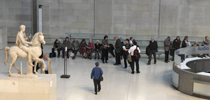
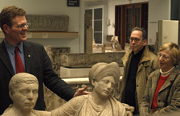

|
Our winter Members’ open evening, Changing Landscapes: Cultural footprints throughout the ages, will take place on Monday 4 December 2006 at 18.15 - 20.30:
Join us as we trace the human race’s footsteps through time, looking at some of the great archaeological and heritage sites of the world and examining the markers left on the landscapes of today. Based around the new exhibition The Past from Above: through the lens of Georg Gerster, the evening will focus on the variety of cultures and civilisations that have shaped the world around us. With the aid of the British Museum’s magnificent permanent collections, experts and curators will illustrate why some of these monuments were created, what they mean and how they remain of great significance to the world today.


close
|